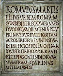
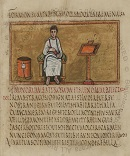
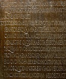
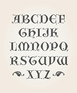

STYLES OF WESTERN CALIGRAPHY
RUSTIC CAPITALS
The script was used between the 1st century and the 9th century, most often between the 4th and 6th centuries. After the 5th century, rustic capitals began to fall out of use, but they continued to be used as a display script in titles and headings, along with uncial as the script of the main text.
 
ROMAN CRUSIVE
Old Roman cursive, also called majuscule cursive and capitalis cursive, was the everyday form of handwriting used for writing letters, by merchants writing business accounts, by schoolchildren learning the Latin alphabet, and even by emperors issuing commands. A more formal style of writing was based on Roman square capitals.
ROMAN SQUARE CAPITALS
Square capitals were used to write inscriptions, and less often to supplement everyday handwriting. When written in documents this style is known as Latin book hand. For everyday writing the Romans used a current cursive hand known as Latin cursive. Notable examples of square capitals used for inscriptions are found on the Roman Pantheon.
 
UNCIAL SCRIPT
Early uncial script most likely developed from late rustic capitals. Early forms are characterized by broad single-stroke letters using simple round forms taking advantage of the new parchment and vellum surfaces, as opposed to the angular, multiple-stroke letters, which are more suited for rougher surfaces, such as papyrus.